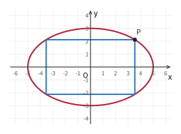
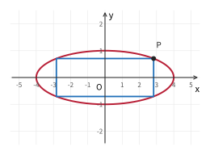
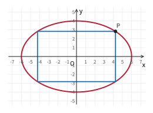

ホーム ＞ 数学C ＞ 媒介変数表示・極座標
別冊練習問題 8 の解答 楕円に内接する長方形の面積の最大
(1) 楕円 \(\dfrac{x^2}{25}+\dfrac{y^2}{9}=1\) に内接し、辺が座標軸に平行な長方形の面積の最大値を求めよ。
パラメータ表示
\(P(5\cos\theta,\ 3\sin\theta)\ \left(0<\theta<\dfrac\pi2\right)\)。長方形は軸に平行で4点が対称。

面積
\[S=(2\cdot5\cos\theta)(2\cdot3\sin\theta)=60\sin\theta\cos\theta=30\sin2\theta\]
最大
\(\sin2\theta=1\)、つまり \(\theta=\dfrac\pi4\) のとき最大値 \(30\)。
【答案】
\[30\]答
(2) 楕円 \(\dfrac{x^2}{16}+y^2=1\) に内接し、辺が座標軸に平行な長方形の面積の最大値を求めよ。
パラメータ表示
\(P(4\cos\theta,\ \sin\theta)\ \left(0<\theta<\dfrac\pi2\right)\)。長方形は軸に平行で4点が対称。

面積
\[S=(2\cdot4\cos\theta)(2\cdot1\sin\theta)=16\sin\theta\cos\theta=8\sin2\theta\]
最大
\(\sin2\theta=1\)、つまり \(\theta=\dfrac\pi4\) のとき最大値 \(8\)。
【答案】
\[8\]答
(3) 楕円 \(\dfrac{x^2}{36}+\dfrac{y^2}{16}=1\) に内接し、辺が座標軸に平行な長方形の面積の最大値を求めよ。
パラメータ表示
\(P(6\cos\theta,\ 4\sin\theta)\ \left(0<\theta<\dfrac\pi2\right)\)。長方形は軸に平行で4点が対称。

面積
\[S=(2\cdot6\cos\theta)(2\cdot4\sin\theta)=96\sin\theta\cos\theta=48\sin2\theta\]
最大
\(\sin2\theta=1\)、つまり \(\theta=\dfrac\pi4\) のとき最大値 \(48\)。
【答案】
\[48\]答